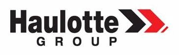
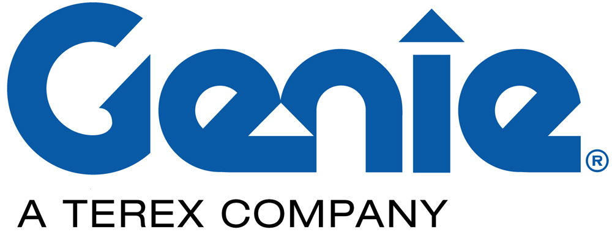
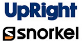
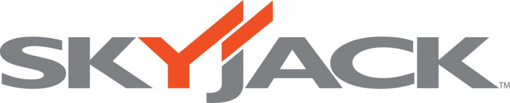

Ведущие компании-производители подъемников
Haulotte Group
В далёком 1881 году французский предприниматель Александр Пангели (Alexandre Pinguely) основал компанию под своим именем, которая специализировалась на производстве паровозов, и за 50 лет работы компания достигла больших высот в производстве локомотивов. Но в 1932 году компания сменила профиль деятельности и занялась производством паровых лопат (прообразы современных экскаваторов). В последующем компания сосредоточилась на производстве автокранов и техники для земляных работ. В 1924 году Артур Алот (Arthur Haulotte) открыл фирму «Строительное ателье Артура Алота», которая длительное время производила подъёмные платформы, вышки и опять же мобильные краны. Компании Александра Пангели и Артура Алота объединили свои усилия только в 1979 году. Несмотря на объединение, компании продолжали работать каждая в близкой для себя нише. Так Pinguely продолжает производство подъёмных автокранов и башенных кранов для нужд армии, в то время, как Haulotte сосредоточилась на автоподъёмниках для бизнеса. Окончательное объединения двух компаний PINGUELY и Haulotte произошло лишь в 1995 году, а спустя 10 лет, в 2005году была переименована в Haulotte Group. На данный момент компания является основным французским производителем подъемников и третьей по величине в мире. Компании Haulotte Group принадлежит пять заводов в Европе и два в США. Общий объём производства составляет более 200 000 подъёмников в год. Компания выпускает различные типы подъемников: вертикальные, телескопические, ножничного и коленчатого типа с высотой подъема до 41 м. Модельный ряд Haulotte Group состоит из более чем 60 моделей подъемников различного назначения и технических особенностей.
Genie
История торговой марки Genie началась в 1966 г. в США, когда Бад Башнел (основатель компании) купил права на производство подъемных механизмов, работающих на сжатом воздухе. С тех пор бизнес начал стремительно развиваться и вскоре лифты и подъемники марки Genie приобрели популярность и уважение потребителей во всем мире, все чаще получая призы за лучший технический дизайн и поразительную надежность. В настоящее время компания Genie Industries, выпускающая подъемники Genie, входит в мощнейшую промышленную группу Terex AWP и выпускает следующие типы подъемников: ножничные (электрические и дизельные), коленчатые (самоходные и прицепные), телескопические подъемники, вертикальные и мачтовые рабочие платформы, грузовые подъемники, телескопические погрузчики, световые башни, платформы для инспекции мостов.
JLG
В 1969 году американский предприниматель Джон Л. Гроув покинул успешную компанию по производству кранов, в которой он был одним из учредителей, и организовал собственную фирму JLG по производству подъемников, так как он увидел большую потребность в машинах, которые могли бы быстро и безопасно поднимать рабочих для выполнения строительных и отделочных работ. Небольшой металлообрабатывающий завод в г.Мак Коннелльсбург, купленный Джоном в сотрудничестве с его двумя близкими друзьями, послужил началом первого производства подъемников JLG. Штат завода составлял 20 человек. И уже в 1970г. компания JLG Industries осуществила первую продажу собственного подъемника, а 1973г. был произведен первый подъемник ножничного типа. На сегодняшний день компания JLG Industries входит в группу компаний OSHKOSH, имеет представительства в Великобритании, Австралии, Голландии, Франции, Бельгии, странах Азии и России. Клиенты во всем мире выбирают подъемники JLG за их высокие потребительские свойства, качество изготовления и надежность.
UpRight Snorkel
В 1946 году была создана американская компания "UPRIGHT". основателем является Уоллес Джонсон, штаб-квартира компании располагается в городе Вашингтон, США. Первоначально компания производила алюминиевые строительные леса, которые отличались новаторскими решениями и быстро завоевали популярность среди строителей. Серийное производство ножничных самоходных подъемников компанией "UPRIGHT" было начато в 1972 году после открытия нового завода в Сельме. Первый ножничный подъёмник получил название «Flying Carpet», который вскоре по популярности опередил строительные леса. После этого компания приступила к расширению линейки подъемников: появились различные модели прицепных , самоходных коленчатых и ножничных подъемников. После 2000 года компания приходит в упадок, однако после продажи марки компании "Tanfield Group Plc." наступило возрождение. В июне 2006 года на свет появилась обновлённая "UPRIGHT Powered Access", добившаяся успехов в восстановлении доверия к прежнему бренду. В 2007-м году компания "UPRIGHT" купила известную фирму "Snorkel", образовавшуюся в 1958м году, объединив, таким образом две передовые старейшие компании с огромным опытом производства, мощным инженерным подразделением, инновационными технологиями. В 2010-м году принято решение оставить название "Snorkel", т.к. оно отлично соответствует маркетинговым задачам и в полной мере отражает спектр деятельности компании.
Skyjack
Skyjack Inc. (Скайджек) — канадская компания-производитель грузоподъемной техники, основанная в 1986 году. Штаб-квартира компании находится в городе Гельф, штат Онтарио, Канада. Первый ножничный подъемник компания Skyjack выпустила в том же 1986 году и уже в 90-х годах смогла завоевать 30% рынка самоходных подъемных устройств. В 2002 Skyjack была приобретена корпорацией Linamar (канадский производитель двигателей и трансмиссий, а также деталей к ним.). Получившийся тандем Linamar и Skyjack позволил повысить прочность, стабильность и надежность выпускаемых подъемников. В настоящее время производственные мощности компании располагаются в Канаде, Соединенных Штатах и Венгрии при поддержке отделений компании в Европе и Азии.
Наша компания продает и сдает в аренду подъёмники. Ознакомиться с
ассортиментом и условиями
сотрудничества вы можете, пройдя по нижеуказанным ссылкам:
Купить подъёмник
Взять подъёмник в аренду